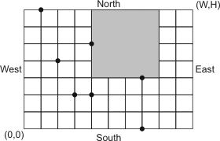

Home Page
F.A.Qs
Statistical Charts
Past Contests
Scheduled Contests
Award Contest
| Online Judge | Problem Set | Authors | Online Contests | User | ||||||
|---|---|---|---|---|---|---|---|---|---|---|
| Web Board Home Page F.A.Qs Statistical Charts | Current Contest Past Contests Scheduled Contests Award Contest | |||||||||
|
Language: Cricket Field
Description Once upon a time there was a greedy King who ordered his chief Architect to build a field for royal cricket inside his park. The King was so greedy, that he would not listen to his Architect's proposals to build a field right in the park center with pleasant patterns of trees specially planted around and beautiful walks inside tree alleys for spectators. Instead, he ordered neither to cut nor to plant even a single tree in his park, but demanded to build the largest possible cricket field for his pleasure. If the Kind finds that the Architect has dared to touch even a single tree in his park or designed a smaller field that it was possible, then the Architect will loose his head. Moreover, he demanded his Architect to introduce at once a plan of the field with its exact location and size.
Your task is to help poor Architect to save his head, by writing a program that will find the maximum possible size of the cricket field and its location inside the park to satisfy King's requirements. The task is somewhat simplified by the fact, that King's park has a rectangular shape and is situated on a flat ground. Moreover, park's borders are perfectly aligned with North-South and East-West lines. At the same time, royal cricket is always played on a square field that is also aligned with North-South and East-West lines. Architect has already established a Cartesian coordinate system and has precisely measured the coordinates of every tree. This coordinate system is, of course, aligned with North-South and East-West lines. Southwestern corner of the park has coordinates (0, 0) and Northeastern corner of the part has coordinates (W, H), where W and H are the park width and height in feet respectively. For this task, you may neglect the diameter of the trees. Trees cannot be inside the cricket field, but may be situated on its side. The cricket field may also touch park's border, but shall not lie outside the park. Input The first line of the input contains three integer numbers N, W, and H, separated by spaces. N (0 ≤ N ≤ 100) is the number of trees in the park. W and H (1 ≤ W, H ≤ 10000) are the park width and height in feet respectively.
Next N lines describe coordinates of trees in the park. Each line contains two integer numbers Xi and Yi separated by a space (0 ≤ Xi ≤ W, 0 ≤ Yi ≤ H) that represent coordinates of ith tree. All trees are located at different coordinates. Output Write to the output a single line with three integer numbers P, Q, and L separated by spaces, where (P, Q) are coordinates of the cricket field Southwestern corner, and L is a length of its sides. If there are multiple possible field locations with a maximum size, then output any one.
Sample Input 7 10 7 3 2 4 2 7 0 7 3 4 5 2 4 1 7 Sample Output 4 3 4 Source | ||||||||||
[Submit] [Go Back] [Status] [Discuss]
All Rights Reserved 2003-2013 Ying Fuchen,Xu Pengcheng,Xie Di
Any problem, Please Contact Administrator